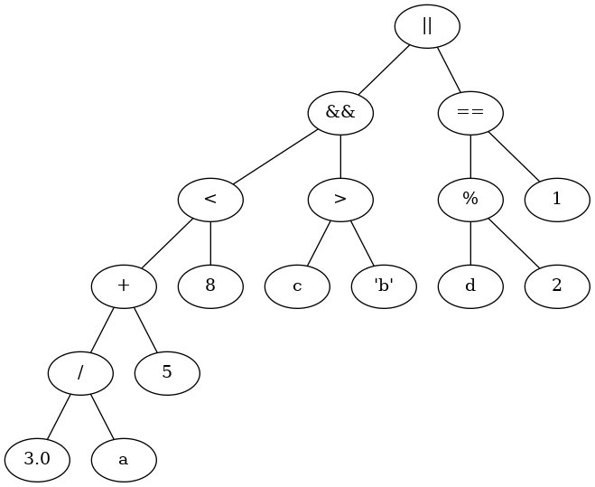

Type, Variable, Assignment, and Expression¶
Types¶
For each type, understand:
is a class type?
is numeric?
is ordered?
is signed?
is exact?
range
related types
Name |
Tags |
|---|---|
int |
non-class, numeric, signed, ordered, exact |
unsigned int |
non-class, numeric, unsigned, ordered, exact |
float |
non-class, numeric, signed, ordered, not exact |
double |
non-class, numeric, signed, ordered, not exact |
char |
non-class, numeric, unsigned, ordered, exact |
string |
class, not numeric, ordered |
vector |
class template, not numeric |
Derived types
Types that are derived from other data-types. Refer to Reference, Pointer and Array Data Types for more details
pointer type
array type
reference type
Class template
Class is another family of types that take base-types to make a new type. E.g.
vector
Variables¶
identifier naming
1// ==== identifiers ==== 2 3// ---- correct ---- 4int _a; 5int ____; 6int a10___; 7int a_1_0; 8int _1_0; 9 10// ---- wrong ---- 11int a$; 12int 3x; 13int mid-var; 14 15// ---- Good ---- 16int myVar1; // var is a good abbreviation for variable 17int count; 18double avgAge; // avg is a a good abbreviation for average 19double gpa; // good abbreviation 20 21// ---- Poor ---- 22int PtAc; // unknown abbreviation 23int v; // not informative 24double count = 1.5; // name not matches the purpose 25int NUMBER; // not following naming convention
declaration
initialization
assignment during declaration
not assignment! have different syntax!
1// ==== declarations, initialization ==== 2 3// ---- correct ---- 4int a; 5int a = 10; 6int a, b, c; 7int a, b = 5, c = 10; 8 9// ---- wrong ---- 10int a 11int a b c; 12 13// use before declare 14a = 10; 15int a;
Literal¶
How values are represented in the source code.
int
1,100double
3.0,3e2,3.0e-1long
1000lfloat
1.0funsigned int
100uchar
'a'string
"abc"escape sequence
\n,\t,\",\',\\etc. in char or string literal
Assignment¶
=operatorlvalue - something that points to a specific memory address
variables
references
rvalue - something that does not point to a specific memory address
temporary and short-lived
literals
compound expressions e.g.
x + ytemporary object
assignment operation requires an lvalue on the left and an rvalue on the right
short-handed assignment operators
+=-=*=/=%=
1// ==== Assignment ====
2
3// ---- correct ----
4int a = 10;
5int b = a;
6b = a;
7a += b;
8
9double c = a;
10b = a * c;
11
12// ---- wrong ----
13a + b = 20; // rvalue on the left
14a == 10; // wrong operator
15
16// use without initial value
17int a;
18a = a + 1;
19a += 1;
Conversion and Type casting¶
Type conversion (implicit)
assignment forces type casting
implicit conversion happens in operations between mixed types (the value of the type with smaller range will be converted to the type with lager range, a.k.a. widen)
Type casting (explicit)
explicit type casting
static_cast<NewType>(variable)
1// ==== conversion, type casting ====
2
3// ---- correct ----
4int a = 10;
5double b;
6char c = 'L';
7
8b = a;
9a = b;
10b = a + c;
11
12// average without losing precision
13int total = 7;
14int count = 3;
15double average = static_cast<double>(total) / count;
16
17// convert to 3.210000
18double val = 3.213;
19double result = static_cast<int>(val * 100) / 100.0;
20
21// ---- wrong ----
22int total = 7;
23int count = 3;
24double average = total / count; // lose precision, get 2.0, expect 2.3333...
25double average = static_cast<double>(total / count); // cast too late
Expressions¶
operators
types
arithmetic
increase, decrease:
++,--prefix vs suffix
requires an lvalue
relational
logic
bit-wise
assignment
other:
::,<<,>>,&,*,.,->
Pitfalls
=vs==relational
&& ||vs bit-wise& |% on non-int
lose precision in integer division
chained range check
1 < a < 10bool vs int, asymmetric interconversion
true -> 1, false -> 0
non-zero -> true, 0 -> false
1// ==== operators ==== 2 3// ---- correct ---- 4if (age > 1 && age < 10) 5 cout << "Young child\n"; 6 7// ---- wrong ---- 8double a = 10; 9int b = a % 3; 10 11if (grade = 100) 12 cout << "perfect!"; 13 14if (age < 10 & age > 1) // this actually works well but is a wrong syntax 15 cout << "Young child\n"; 16 17if (1 < age < 10) // will compile but wrong! 18 cout << "Young child\n";
Step-wise evaluation, in every step consider:
conversion and type casting
precedence rule
1// ==== Expression ==== 2 3// ---- step-wise evaluation ---- 4// given: x = 2 5 (x + 5) / 4 6= (2 + 5) / 4 7= 7 / 4 8= 1 9 10 static_cast<int>(19.5 / 3) + 5.0 11= static_cast<int>(6.5) + 5.0 12= 6 + 5.0 13= 11.0 14 15 ((17 / 2 + 19 % 3 - 3 * 2 + 4 * 3) >= (5 + 2 * 4)) && !((((4 * 5) + 1) /2) == (7 / 3 + 2 * 5 - 2) || !(4 >= 3)) 16= ((8 + 1 - 6 + 12) >= (5 + 8)) && !(((20 + 1) / 2) == (2 + 10 - 2) || !(true)) 17= (15 >= 13) && !((21 / 2) == 10 || false) 18= true && !(true || false) 19= true && !true 20= true && false 21= false
evaluation tree
Visual aid when evaluating complex expressions
e.g.
3.0 / a + 5 < 8 && c > 'b' || d % 2 == 1